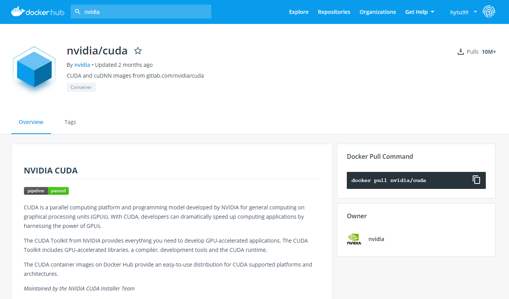
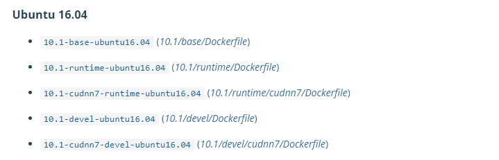

Docker入门总结
之前一直不知道docker究竟是个什么，也一直没有用过，在服务器上跑代码也只是先装环境，然后再在IDE远程连接服务器运行。最近想用GCR上的卡来跑实验，推荐使用docker（不知道是否必须使用），想想也可以趁着这个机会稍微入个门，也就学了学，过程也似乎不是那么顺利（花了好几天），不过现在似乎已经可以在docker里跑代码了，也算是初步成功了吧，于是来总结一下。
我的参考资料主要是我的mentor提供给我一份ppt以及一份更简易的说明指南，也因为很多不理解的地方查了不少资料，我综合了一下，主要还是以ppt上的步骤为主（它不仅仅适用于GCR）。
测试Docker是否工作
默认docker/nvidia-docker都已经安装了
1 | docker # The standard docker. |
1 | docker run hello-world |
在Docker Hub上创建账号
这个主要是可以把自己本地的docker image给push到docker hub上，这样之后自己或者他人也可以在别的地方pull这个镜像到本地来使用。
注册时的用户名也就是你之后push时镜像名字的前缀。
创建自己的镜像
先在Docker Hub上找一个镜像，比如$\tt{nvidia/cuda:9.1-devel-ubuntu16.04}$，镜像的的命名格式为$\tt{repository:tag}$，一个repository可以有多个tag，我的理解是多个不同版本。


先介绍通过命令行输入和commit指令创建镜像的方法。命令行输入下面的指令可以进入我们选择的docker，如果本地没有，它也会先自动pull下来。
1 | nvidia-docker run -it nvidia/cuda:9.0-devel-ubuntu16.04 |
执行命令后就会看到$\tt{root@}$后面跟着一串字符，我觉得可以看成是这次操作的一个ID，在commit之前，我们在docker里执行的操作并不会保存下来。
接下来就是按照自己的想法去安装东西了，因为我需要使用python3和pytorch，以及需要其他的一些包，所以下面的示例也会和这个相关。
1 | 安装 cudann 7.0, python3, pip3. |
输入$\tt{Ctrl + D}$ 可以退出docker。
然后我们需要提交我们刚才对容器进行的修改，指令如下：
1 | docker commit fbcc4a9105ac hytu99/pytorch:py35 |
前面的字符串就是我们刚才进入容器后生成的那个字符串，表示我们要commit的docker，后面则是我们提交后镜像的名字，一般格式是$\tt{username/repository:tag}$。如果不需要push到docker hub，应该也可以不需要前面的$\tt{username}$前缀。
之后执行$\tt{docker\ images}$或者$\tt{docker\ image \ ls}$命令就可以看到本地的docker了，其中$\tt{IMAGE \ ID}$也唯一指定了一个docker。
我们可以将本地的docker给push到docker hub上。
1 | sudo docker login |
push完后我们就能在docker hub上Repositories里看到这个docker了。

上面的方法比较直观一些，但也有更简便的方法，用$\tt{docker \ build}$命令，可以将上面安装东西的语句写进一个文件（Dockerfile）里，不过得确保文件里没有拼写等错误，否则可能失败。
在“/home/hanyue/code/myproject/test/”路径下有一个“test_docker.py”, 想用本地这个docker来运行这个代码的话，可以执行如下命令：
1 | docker run --rm --ipc=host --volume-driver=nfs -v /home:/home hytu99/pytorch:py35 sh -c "cd /home/hanyue/code/myproject/test/ && python -u test_docker.py" # 具体一些参数的意义我也不是完全了解，重点应该是-v <src>:<dst>指定路径，以及后面指定docker和shell命令 |
在GCR上使用Docker*
1 | 设置环境变量 |
以下为“myconfig”文件的一个示例内容，之前创建docker部分的安装命令也可以放到这个文件中，也即前面提到的直接使用build命令来创建docker。
1 | #-------------------------------------------------------------------------- |
1 | 在“gcr-repos”服务器上创建我们自己的docker镜像，这里的REPOSITORY和TAG应该也是可以自己指定的。 |
如果要使用“gcr-repos”服务器上的docker，我们可以执行如下命令：
1 | docker run --rm --ipc=host --volume-driver=nfs -v gcrnfsw2-msraim.redmond.corp.microsoft.com/msraimscratch:/msraimscratch --user FAREAST.v-hatu gcr-repos.redmond.corp.microsoft.com:5000/v-hatu/pytorch:py35 sh -c "cd /msraimscratch/v-hatu/myproject && python -u test/test_docker.py -1> out.txt 2>err.txt" |